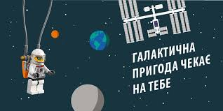
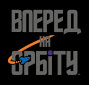

Програма FIRST LEGO League створена для дітей 9-16 років двома міжнародними компаніями – FIRST та LEGO Group.
Мета програми – надихнути дітей вивчати науку, технологію, математику а також долучатись до вирішення актуальних світових питань за допомогою їхньої улюбленої іграшки – конструктора LEGO.
Трьома ключовими аспектами FIRST LEGO League є робототехніка, дослідження та лідерство.
Використовуючи набори LEGO Mindstorms, кожна команда проектує, конструює та програмує повністю автономного робота для змагання на спеціальному полі. Також діти досліджують тему поточного року, обирають актуальну проблему світового значення та придумують інноваційне рішення.
Щороку сезон FIRST LEGO League починається на початку літа, коли всі команди реєструються і дізнаються Тему Сезону, над якою вони будуть працювати протягом навчального року. Вона завжди пов’язана з актуальною світовою проблемою, тож у дітей є унікальна можливість дізнатися що трапляється в світі та долучитися до його покращення.
Тема сезону 2018-2019 – “ВПЕРЕД НА ОРБІТУ!” і присвячена вона дослідженню і вирішенню фізичних та соціальних проблем, з якими зіштовхнулась людина під час космічних подорожей.

Визначити фізичні та соціальні проблеми, з якими зіштовхується людство, при тривалому освоєнні космосу в межах нашої Сонячної системи та запропонувати варіанти їх вирішення.
Людству потрібні були всі знання, зібрані вченими за сотні років, щоб почати космічні польоти. І тоді людина зіткнуkfся з новою проблемою - для колонізації інших планет і далеких перельотів потрібно розробити замкнуту екосистему, в тому числі - забезпечити космонавтів їжею, водою і киснем. Доставляти їжу на Марс, який знаходиться за 200 мільйонів кілометрів від Землі, дорого і складно, логічніше буде знайти такі способи виробництва продуктів, які легко реалізувати в польоті і на Червоній планеті.
Наша команда "RobotKram" вирішила працювати над темою:"Сільске господарство в космосі". Ми шукаємо відповіді на такі питання. Як на насіння впливає мікрогравітація? Які овочі будуть нешкідливі, якщо їх виростити в багатому важкими металами грунті Марса? Як облаштувати плантацію на борту космічного корабля? Вчені і космонавти вже понад п'ятдесят років шукають відповіді на ці питання. А ми до них приєдналися та створили свою модель городу.